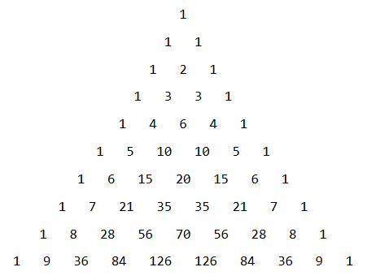

1 Παραγοντοποίηση αλγεβρικών παραστάσεων
Η παραγοντοποίηση (ή ανάλυση σε γινόμενο παραγόντων) μιας αλγεβρικής παράστασης είναι η διαδικασία μετασχηματισμού ενός αθροίσματος (πολυωνύμου) σε γινόμενο δύο ή περισσότερων παραγόντων. Η διαδικασία αυτή είναι εξαιρετικά χρήσιμη για την απλοποίηση σύνθετων παραστάσεων, την εκτέλεση πράξεων με ρητά κλάσματα και την επίλυση εξισώσεων ανώτερου βαθμού.
Ακολουθούν οι κυριότερες μέθοδοι παραγοντοποίησης:
1.1 1. Κοινός Παράγοντας
Όταν όλοι οι όροι μιας παράστασης περιέχουν έναν κοινό αριθμητικό ή εγγράμματο παράγοντα, αυτός τίθεται εκτός παρένθεσης με βάση την επιμεριστική ιδιότητα: \(\mu\alpha + \mu\beta + \mu\gamma = \mu(\alpha + \beta + \gamma)\).
* Παράδειγμα: \(6\alpha^3\beta^2 - 3\alpha^2\beta^3 = 3\alpha^2\beta^2(2\alpha - \beta)\).
* Παράδειγμα: \(3\alpha(x - y) - 2\omega(x - y) - (x - y) = (x - y)(3\alpha - 2\omega - 1)\).
1.2 2.Ομαδοποίηση (Χρήση Ομάδων)
Οι όροι χωρίζονται σε ομάδες με ίσο πλήθος όρων. Από κάθε ομάδα εξάγεται κοινός παράγοντας, έτσι ώστε να προκύψει μια νέα κοινή παρένθεση για όλες τις ομάδες.
* Παράδειγμα: \(\alpha x + \beta x + \alpha y + \beta y = x(\alpha + \beta) + y(\alpha + \beta) = (\alpha + \beta)(x + y)\).
* Παράδειγμα: \(x^3 - xy + x^2y^2 - y^3 = x(x^2 - y) + y^2(x^2 - y) = (x^2 - y)(x + y^2)\).
1.3 3. Χρήση Αξιοσημείωτων Ταυτοτήτων
Πολλές παραστάσεις παραγοντοποιούνται άμεσα αν αναγνωριστούν ως αναπτύγματα γνωστών ταυτοτήτων:
- Διαφορά Τετραγώνων: \(\alpha^2 - \beta^2 = (\alpha + \beta)(\alpha - \beta)\).
- Παράδειγμα: \(4x^2 - 9y^2 = (2x)^2 - (3y)^2 = (2x + 3y)(2x - 3y)\).
- Τέλειο Τετράγωνο Διωνύμου: \(\alpha^2 \pm 2\alpha\beta + \beta^2 = (\alpha \pm \beta)^2\).
- Παράδειγμα: \(25x^2 - 20xy + 4y^2 = (5x - 2y)^2\).
- Άθροισμα και Διαφορά Κύβων:
- \(\alpha^3 + \beta^3 = (\alpha + \beta)(\alpha^2 - \alpha\beta + \beta^2)\).
- \(\alpha^3 - \beta^3 = (\alpha - \beta)(\alpha^2 + \alpha\beta + \beta^2)\).
- Παράδειγμα: \(8\omega^3 + 125 = (2\omega)^3 + 5^3 = (2\omega + 5)(4\omega^2 - 10\omega + 25)\).
- Ταυτότητα Euler: \(a^3 + b^3 + c^3 - 3abc = (a + b + c)(a^2 + b^2 + c^2 - ab - bc - ca)\).
1.4 4. Παραγοντοποίηση Τριωνύμου (\(\alpha x^2 + \beta x + \gamma\))
Για την Παραγοντοποίηση ενός τριωνύμου, η βασικές μέθοδοι είναι:
- Η συμπλήρωση τετραγώνου ώστε η παράσταση να πάρει τη μορφή διαφοράς τετραγώνων. Η δυνατότητα παραγοντοποίησης στο σύνολο των πραγματικών αριθμών εξαρτάται από τη ποσότητα (\(\Delta = \beta^2 - 4\alpha\gamma\)) η οποία λέγεται διακρίνουσα : (Θα την συναντήσουμε σε επόμενα μαθήματα)
* Αν \(\Delta > 0\), το τριώνυμο αναλύεται σε γινόμενο δύο πρωτοβάθμιων παραγόντων.
* Αν \(\Delta = 0\), το τριώνυμο είναι τέλειο τετράγωνο.
* Αν \(\Delta < 0\), το τριώνυμο δεν αναλύεται σε γινόμενο στο σύνολο των πραγματικών αριθμών.
* Παράδειγματα:
Α. Συμπλήρωση τετραγώνου για το τριώνυμο \(x^2 - 7x + 12\)
Σε τριώνυμα αυτής της μορφής (όπου ο συντελεστής του \(x^2\) είναι η μονάδα), ακολουθούμε τα εξής βήματα:
- Βήμα 1: Γράφουμε τον συντελεστή του πρωτοβάθμιου όρου (το \(-7\)) ως γινόμενο του 2 επί έναν άλλο παράγοντα. Δηλαδή, το 7 γίνεται \(2 \cdot \dfrac{7}{2}\) (Αν είναι άρτιος τότε γράφεται εύκολα σαν γινόμενο με το 2).
- Η παράσταση γίνεται: \(x^2 - 2 \cdot \dfrac{7}{2}x + 12\)
- Βήμα 2: Προσθέτουμε και αφαιρούμε το τετράγωνο αυτού του παράγοντα (δηλαδή το \((\frac{7}{2})^2 = \frac{49}{4}\)).
- Η παράσταση γίνεται: \(x^2 - 2 \cdot \dfrac{7}{2}x + \left(\dfrac{7}{2}\right)^2 - \dfrac{49}{4} + 12\)
- Βήμα 3: Οι τρεις πρώτοι όροι σχηματίζουν πλέον ένα τέλειο τετράγωνο βάσει της ταυτότητας \((\alpha-\beta)^2 = \alpha^2 - 2\alpha\beta + \beta^2\).
- Έχουμε: \(\left(x - \dfrac{7}{2}\right)^2 - \dfrac{49}{4} + 12\)
- Βήμα 4: Εκτελούμε τις πράξεις στους σταθερούς όρους: \(-\dfrac{49}{4} + 12 = -\dfrac{49}{4} + \dfrac{48}{4} = -\dfrac{1}{4}\).
- Η παράσταση γίνεται: \(\left(x - \dfrac{7}{2}\right)^2 - \left(\dfrac{1}{2}\right)^2\)
- Βήμα 5: Εφαρμόζουμε την ταυτότητα της διαφοράς τετραγώνων \(\alpha^2 - \beta^2 = (\alpha-\beta)(\alpha+\beta)\).
- \(\left(x - \dfrac{7}{2} - \dfrac{1}{2}\right)\left(x - \dfrac{7}{2} + \dfrac{1}{2}\right)\)
- \(\left(x - \dfrac{8}{2}\right)\left(x - \dfrac{6}{2}\right)\)
- Τελική Παραγοντοποίηση: \(\mathbf{(x - 4)(x - 3)}\)
Β. Συμπλήρωση τετραγώνου για το τριώνυμο \(2x^2 + 5x - 3\)
Όταν ο συντελεστής του δευτεροβάθμιου όρου είναι διαφορετικός από τη μονάδα, αυτός βγαίνει ως κοινός παράγοντας από την αρχή.
- Βήμα 1: Βγάζουμε το 2 έξω από την παρένθεση.
- \(2 \cdot \left(x^2 + \dfrac{5}{2}x - \dfrac{3}{2}\right)\)
- Βήμα 2: Εργαζόμαστε μέσα στην παρένθεση. Γράφουμε τον συντελεστή \(\dfrac{5}{2}\) ως γινόμενο του 2. Δηλαδή, \(\dfrac{5}{2} = 2 \cdot \dfrac{5}{4}\).
- \(2 \cdot \left(x^2 + 2 \cdot \dfrac{5}{4}x - \dfrac{3}{2}\right)\)
- Βήμα 3: Προσθέτουμε και αφαιρούμε το τετράγωνο του \(\dfrac{5}{4}\), δηλαδή το \(\left(\dfrac{5}{4}\right)^2 = \dfrac{25}{16}\).
- \(2 \cdot \left[x^2 + 2 \cdot \dfrac{5}{4}x + \left(\dfrac{5}{4}\right)^2 - \dfrac{25}{16} - \dfrac{3}{2}\right]\)
- Βήμα 4: Σχηματίζουμε το τέλειο τετράγωνο \((\alpha+\beta)^2 = \alpha^2 + 2\alpha\beta + \beta^2\).
- \(2 \cdot \left[\left(x + \dfrac{5}{4}\right)^2 - \dfrac{25}{16} - \dfrac{24}{16}\right]\) (κάνοντας ομώνυμα τα κλάσματα)
- Βήμα 5: Συνδυάζουμε τους σταθερούς όρους: \(-\dfrac{25}{16} - \dfrac{24}{16} = -\dfrac{49}{16} = -\left(\dfrac{7}{4}\right)^2\).
- Η παράσταση είναι: \(2 \cdot \left[\left(x + \dfrac{5}{4}\right)^2 - \left(\dfrac{7}{4}\right)^2\right]\)
- Βήμα 6: Εφαρμόζουμε τη διαφορά τετραγώνων.
- \(2 \cdot \left(x + \dfrac{5}{4} - \dfrac{7}{4}\right)\left(x + \dfrac{5}{4} + \dfrac{7}{4}\right)\)
- \(2 \cdot \left(x - \dfrac{2}{4}\right)\left(x + \dfrac{12}{4}\right)\)
- \(2 \cdot \left(x - \dfrac{1}{2}\right)\left(x + 3\right)\)
- Τελική Παραγοντοποίηση: \(\mathbf{(2x - 1)(x + 3)}\)
- Αν το τριώνυμο είναι της μορφής \(x^2+(α+β)x+αβ\) γράφεται \((x+α)(x+β)\)
Η παραγοντοποίηση τριωνύμου της μορφής \(x^2 + (α+\beta)x + α\beta\) βασίζεται στην αξιοσημείωτη ταυτότητα «Γινόμενο Διωνύμων με Κοινό Όρο». Σύμφωνα με αυτήν, η παράσταση μπορεί να γραφτεί απευθείας ως γινόμενο δύο πρωτοβάθμιων παραγόντων: \((x + α)(x + \beta)\).
Η μεθοδολογία απαιτεί την εύρεση δύο αριθμών \(α\) και \(\beta\) τέτοιων ώστε:
- Το άθροισμά τους (\(α+\beta\)) να ισούται με τον συντελεστή του πρωτοβάθμιου όρου (\(x\)).
- Το γινόμενό τους (\(α\cdot\beta\)) να ισούται με τον σταθερό όρο της παράστασης.
Παραδείγματα:
Α. Παραγοντοποίηση του \(x^2 - 7x + 12\)
Σε αυτό το τριώνυμο, ο συντελεστής του \(x^2\) είναι η μονάδα, οπότε αναζητούμε δύο αριθμούς \(α\) και \(\beta\) με τις εξής ιδιότητες:
* Άθροισμα: \(α + \beta = -7\)
* Γινόμενο: \(α \cdot \beta = 12\)
Διαδικασία εύρεσης: Εξετάζουμε τους συνδυασμούς παραγόντων του 12 (σταθερός όρος) που δίνουν άθροισμα \(-7\). Εφόσον το γινόμενο είναι θετικό (+12) και το άθροισμα αρνητικό (-7), και οι δύο αριθμοί πρέπει να είναι αρνητικοί:
* \(-1\) και \(-12\) (Άθροισμα: \(-13\))
* \(-2\) και \(-6\) (Άθροισμα: \(-8\))
* \(-3\) και \(-4\) (Άθροισμα: \(-7\))
Οι αριθμοί που ικανοποιούν τις συνθήκες είναι το \(-3\) και το \(-4\).
Τελική μορφή: \(x^2 - 7x + 12 = \mathbf{(x - 3)(x - 4)}\).
Β. Παραγοντοποίηση του \(2x^2 + 5x - 3\)
Όταν ο συντελεστής του δευτεροβάθμιου όρου είναι διάφορος της μονάδας (\(α \neq 1\)), η παράσταση πρέπει πρώτα να μετατραπεί ώστε να εμφανιστεί η ζητούμενη μορφή. Αυτό επιτυγχάνεται βγάζοντας τον συντελεστή \(2\) ως κοινό παράγοντα:
\(2x^2 + 5x - 3 = 2 \cdot \left(x^2 + \dfrac{5}{2}x - \dfrac{3}{2}\right)\)
Τώρα εργαζόμαστε με το τριώνυμο μέσα στην παρένθεση (\(x^2 + \dfrac{5}{2}x - \dfrac{3}{2}\)) και αναζητούμε δύο αριθμούς \(α\) και \(\beta\) τέτοιους ώστε:
* Άθροισμα: \(α + \beta = \dfrac{5}{2}\)
* Γινόμενο: \(α \cdot \beta = -\dfrac{3}{2}\)
Διαδικασία εύρεσης: Αναζητούμε αριθμούς που το γινόμενό τους να είναι \(-\dfrac{3}{2}\) και το άθροισμά τους \(\dfrac{5}{2}\). Παρατηρούμε ότι:
* Αν πάρουμε τους αριθμούς \(3\) και \(-\dfrac{1}{2}\):
* Γινόμενο: \(3 \cdot (-\dfrac{1}{2}) = -\dfrac{3}{2}\)
* Άθροισμα: \(3 - \dfrac{1}{2} = \dfrac{6-1}{2} = \dfrac{5}{2}\)
Οι αριθμοί αυτοί ικανοποιούν τις συνθήκες. Έτσι η παράσταση μέσα στην παρένθεση παραγοντοποιείται ως \((x + 3)\left(x - \dfrac{1}{2}\right)\).
Τελική επεξεργασία: \(2 \cdot (x + 3)\left(x - \dfrac{1}{2}\right) = (x + 3) \cdot \left[2 \cdot \left(x - \dfrac{1}{2}\right)\right] = \mathbf{(x + 3)(2x - 1)}\).
1.5 5. Μέθοδος των Ριζών (Διαιρετότητα με \(x - \alpha\))
Ένα πολυώνυμο \(P(x)\) έχει ως παράγοντα το διώνυμο \(x - \alpha\) αν και μόνο αν η αριθμητική τιμή του για \(x = \alpha\) είναι μηδέν (\(P(\alpha) = 0\)).
* Στρατηγική: Για πολυώνυμα με ακέραιους συντελεστές, αναζητούμε πιθανές ρίζες ανάμεσα στους διαιρέτες του σταθερού όρου.
* Παράδειγμα: Στο \(x^3 + 4x^2 + 7x + 6\), ο αριθμός \(-2\) (διαιρέτης του 6) μηδενίζει την παράσταση, άρα το \(x + 2\) είναι παράγοντας.
1.6 6. Συνδυασμός Περιπτώσεων
Συχνά απαιτείται η εφαρμογή περισσότερων της μίας μεθόδων διαδοχικά.
* Παράδειγμα: \(x^3 - 9x + 2x^2y - 18y = x(x^2 - 9) + 2y(x^2 - 9) = (x^2 - 9)(x + 2y) = (x + 3)(x - 3)(x + 2y)\).
1.7 Το Τρίγωνο του Pascal
Το Τρίγωνο του Pascal είναι μια γεωμετρική διάταξη αριθμών που στην άλγεβρα χρησιμοποιείται κυρίως για την εύρεση των συντελεστών στα αναπτύγματα των δυνάμεων ενός διωνύμου, όπως το \((a + b)^n\).

Η σύνδεσή του με τις αξιοσημείωτες ταυτότητες η εξής:
- Τετράγωνο Αθροίσματος: Στην ταυτότητα \((a + b)^2 = 1a^2 + 2ab + 1b^2\), οι συντελεστές των όρων είναι οι αριθμοί 1, 2, 1, οι οποίοι αποτελούν την τρίτη γραμμή του τριγώνου του Pascal και υπολογίζονται σαν άθροισμα των δύο αριθμών που βρίσκονται ακριβώς από πάνω του 2=1+1.(Ο πρώτος και ο τελευταίος είναι πάντα 1).
- Κύβος Αθροίσματος: Στην ταυτότητα \((a + b)^3 = 1a^3 + 3a^2b + 3ab^2 + 1b^3\), οι συντελεστές 1, 3, 3, 1 αντιστοιχούν στην τέταρτη γραμμή του τριγώνου. Το 3 υπολογίζεται σαν 1+2 και 2+1.
- Γενίκευση: Το τρίγωνο επιτρέπει τον προσδιορισμό των συντελεστών για οποιαδήποτε δύναμη \(n\), διευκολύνοντας την ανάπτυξη σύνθετων αλγεβρικών παραστάσεων χωρίς την ανάγκη διαδοχικών πολλαπλασιασμών.
το Τρίγωνο του Pascal αποτελεί το θεωρητικό υπόβαθρο για τη δομή των αναπτυγμάτων.
1.8 Ασκήσεις
Κοινός Παράγοντας
- \(2\alpha\beta - 2\alpha\gamma\)
- \(6x^2 + 3x\)
- \(12x^2y + 6xy^2 - 3xy\)
- \(\alpha(x+y) - \beta(x+y)\)
- \(x(2\alpha-\beta) + y(\beta-2\alpha)\)
Ομαδοποίηση
- \(\alpha x + \alpha y + 3x + 3y\)
- \(x^2 + xy - x - y\)
- \(x^3 + x^2 + x + 1\)
- \(3\alpha^3 - 6\alpha^2 + 5\alpha - 10\)
- \(8xy^3 - 24y^2 - 7\alpha xy + 21\alpha\)
Διαφορά Τετραγώνων
- \(x^2 - 9\)
- \(25x^2 - 4\)
- \(81\alpha^2 - 49\beta^2\)
- \((x-y)^2 - 1\)
- \((\alpha+\beta)^2 - (\alpha-\beta)^2\)
Τέλειο Τετράγωνο Διωνύμου
- \(x^2 + 10x + 25\)
- \(9x^2 + 4 - 12x\)
- \(25x^2y^2 - 20xy + 4\)
- \(4x^4 + 1 + 4x^2\)
- \((\alpha+1)^2 - 6(\alpha+1) + 9\)
Άθροισμα ή Διαφορά Κύβων
- \(\alpha^3 - 8\)
- \(8x^3 + 27\)
- \(1 - 64x^3\)
- \(x^3y^3 - 1\)
- \(\alpha^4\beta - \alpha\beta^4\)
Τριώνυμο της μορφής \(\alpha x^2 + \beta x + \gamma\)
- \(x^2 - 4x + 3\)
- \(x^2 - 3x - 10\)
- \(x^2 + 5x + 4\)
- \(2x^2 - 5x - 3\)
- \(6x^2 + 7x - 3\)
Διάφοροι Συνδυασμοί Περιπτώσεων
- \(3x^3 - 3x\) (Κοινός παράγοντας και Διαφορά τετραγώνων)
- \(3\alpha^3\beta - 27\alpha\beta^3\) (Κοινός παράγοντας και Διαφορά τετραγώνων)
- \(x^4 - y^4\) (Διαδοχική εφαρμογή Διαφοράς τετραγώνων)
- \(\alpha x^2 - \alpha y^2 + \beta x^2 - \beta y^2\) (Ομαδοποίηση και Διαφορά τετραγώνων)
- \(\alpha^2 - 2\alpha\beta + \beta^2 - \gamma^2\) (Τέλειο τετράγωνο και Διαφορά τετραγώνων)
- \(x^3 + 2x^2 + x\) (Κοινός παράγοντας και Τέλειο τετράγωνο)
- \(x^3 - 9x + 2x^2y - 18y\) (Ομαδοποίηση και Διαφορά τετραγώνων)
- \(\alpha^3x^3 - \beta^3x^3 + \alpha^3 - \beta^3\) (Ομαδοποίηση και Διαφορά κύβων)
- \((\alpha^2+1)^2 - 4\alpha^2\) (Διαφορά τετραγώνων και Τέλειο τετράγωνο)
- \(\alpha^2 - 2\alpha\beta + \beta^2 - \alpha + \beta\) (Τέλειο τετράγωνο και Κοινός παράγοντας/Ομαδοποίηση)
Να παραγοντοποιηθεί η παράσταση \(y^2 - x^2 - 10y + 25\)
- Ομαδοποίηση και Αναγνώριση Τελείου Τετραγώνου
Αναδιατάσσουμε τους όρους της παράστασης ώστε να ομαδοποιήσουμε εκείνους που περιέχουν τη μεταβλητή \(y\) και τον σταθερό όρο:
\[ (y^2 - 10y + 25) - x^2 \]
Παρατηρούμε ότι η παρένθεση \((y^2 - 10y + 25)\) είναι το ανάπτυγμα ενός τελείου τετραγώνου διαφοράς. Σύμφωνα με την ταυτότητα \(\alpha^2 - 2\alpha\beta + \beta^2 = (\alpha - \beta)^2\), έχουμε:
- \(y^2\) είναι το τετράγωνο του \(y\).
- \(25\) είναι το τετράγωνο του \(5\) (\(5^2\)).
- \(-10y\) είναι το διπλάσιο γινόμενο \(-2 \cdot y \cdot 5\).
Άρα: \[ y^2 - 10y + 25 = (y - 5)^2 \]
- \(y^2\) είναι το τετράγωνο του \(y\).
- Εφαρμογή Διαφοράς Τετραγώνων Τώρα η αρχική παράσταση έχει πάρει τη μορφή:
\[ (y - 5)^2 - x^2 \]
Αυτή η μορφή αντιστοιχεί στην ταυτότητα της διαφοράς τετραγώνων \(\alpha^2 - \beta^2 = (\alpha - \beta)(\alpha + \beta)\), όπου στη δική μας περίπτωση \(\alpha = (y - 5)\) και \(\beta = x\).
Εφαρμόζοντας την ταυτότητα, έχουμε:
\[ [(y - 5) - x] \cdot [(y - 5) + x] \]
Τελικό Αποτέλεσμα Η τελική παραγοντοποιημένη μορφή της παράστασης είναι:
\[(y - x - 5)(y + x - 5)\]
- Ομαδοποίηση και Αναγνώριση Τελείου Τετραγώνου
\[\bbox[yellow, 5px]{\color{blue}\Large\text{---}}\] 9. Να γίνει γινόμενο η παράσταση \(6x^3-54x^2+108x\)
Τεχνικές: κοινός παράγοντας → τριώνυμο –> γινόμενο.
Υπόδειξη: Βγάλε κοινό παράγοντα το \(6x\) και παράγοντοποίησε το δευτεροβάθμιο.
Να γίνει γινόμενο η παράσταση \(x^4-8x^3+16x^2-64\)
Τεχνικές: ομαδοποίηση → διαφορά τετραγώνων → επανάληψη.
Υπόδειξη: Ομαδοποίησε σε \((x^4-8x^3+16x^2)-(64)\), αναγνώρισε τετράγωνο (το \(x^4-8x^3+16x^2\) γράφεται σαν τέλειο τετράγωνο \((x^2-??)^2\)) και συνέχισε με διαφορά τετραγώνων.Να γίνει γινόμενο η παράσταση \(4x^3+12x^2-9x-27\)
Τεχνικές: ομαδοποίηση → κοινός παράγοντας → τετραγωνικό τριώνυμο.
Υπόδειξη: Ομαδοποίησε σε δύο ζεύγη, βγάλε κοινούς παράγοντες και παράγοντοποίησε το υπόλοιπο.Να γίνει γινόμενο η παράσταση \(x^6-64\)
Τεχνικές: διαφορά τετραγώνων/κύβων επαναλαμβανόμενα → υποκατάσταση \(y=x^3\) αν θέλεις.
Υπόδειξη: Θέσε \(y=x^3\) → \(y^2-8^2\) → χρησιμοποίησε τύπους \(a^2-β^2\) . Γίνεται και με αντικατάσταση \(y=x^3\)Να γίνει γινόμενο η παράσταση \(x^3+3x^2-9x-27\)
Τεχνικές: ομαδοποίηση → κοινός παράγοντας –> διαφορά τετραγώνων.
Υπόδειξη: Ομαδοποίησε σε \((x^3+3x^2)- (9x+27)\) και βγάλε κοινούς παράγοντες.Να γίνει γινόμενο η παράσταση \(x^4+4x^3-5x^2-20x\)
Τεχνικές: ομαδοποίηση → κοινός παράγοντας →διαφορά τετραγώνων.
Υπόδειξη: Βγάλε \(x^3\) και \(-5x\), γράψε το 5 σαν \((\sqrt{5})^2\).Να γίνει γινόμενο η παράσταση \(9x^4-24x^3+16x^2-27\)
ΒήματαΑναγνώριση τετραγώνου τριωνύμου
Παρατηρούμε ότι τα πρώτα τρία μέλη σχηματίζουν τετράγωνο: \[ (3x^2-4x)^2=9x^4-24x^3+16x^2. \] Άρα η παράσταση γράφεται ως \[ (3x^2-4x)^2-27. \]Διαφορά τετραγώνων
Γράφουμε \(27=(3\sqrt{3})^2\) και εφαρμόζουμε \(A^2-B^2=(A-B)(A+B)\) με \(A=3x^2-4x\) και \(B=3\sqrt{3}\): \[ (3x^2-4x)^2-(3\sqrt{3})^2 =(3x^2-4x-3\sqrt{3})(3x^2-4x+3\sqrt{3}). \]
Τελική παραγοντοποίηση \[ \boxed{\,9x^4-24x^3+16x^2-27=(3x^2-4x-3\sqrt{3})(3x^2-4x+3\sqrt{3})\,} \]
Να γίνει γινόμενο η παράσταση \(x^4+6x^3-7x^2-x-7\)
Τεχνικές: ομαδοποίηση –> κονός παράγοντας–> αναγνώριση τετργώνου .
Υπόδειξη: Δοκίμασε πρώτα ομαδοποίηση \(x^4+6x^3-7x^2\) και \(-x-7\). Ύστερα από το \(x^4+6x^3-7x^2\) κοινός παράγων και το τριώνυμο γινόμενο. Το \(-x-7\) γράφεται \(-(x+7)\)Να γίνει γινόμενο η παρακάτω παράσταση.
\[ 6x^2y-18xy^2+12xyz \]
Τεχνικές: κοινός παράγοντας .
Υπόδειξη: Βγάλε τον μέγιστο κοινό παράγοντα.Να γίνει γινόμενο η παρακάτω παράσταση. \[ x^2y+2xy^2- xz -2yz \]
Τεχνικές: ομαδοποίηση → κοινός παράγοντας .
Υπόδειξη: Ομαδοποίησε σε δύο ζεύγη και βγάλε κοινούς παράγοντες.Να γίνει γινόμενο η παρακάτω παράσταση. \[ 9x^2-12xyz+4y^2z^2-100 \]
Τεχνικές: αναγνώριση τετραγώνου τριωνύμου (οι τρεις πρώτοι όροι) → διαφορά τετραγώνων .
Υπόδειξη: \(9x^2-12xyz+4y^2z^2=(3x-???)^2\) και μετά εφαρμόζεις διαφορά τετραγώνων με το 100.Να γίνει γινόμενο η παρακάτω παράσταση \[ x^3+y^3+3x^2y+3xy^2-8z^3 \]
Τεχνικές: άθροισμα κύβων και ομαδοποίηση → αναγνώριση \((x+y)^3\) → διαφορά κύβων με \(8z^3\).
Υπόδειξη: Γράψε τα πρώτα τέσσερα μέλη ως \((x+y)^3\) και μετά παράγοντοποίησε την διαφορά κύβων.Να γίνει γινόμενο η παρακάτω παράσταση. \[ x^4-2x^2y^2+y^4-16w^4 \]
Τεχνικές: Αναγνώριση τέλειου τετράργωνου \((x^2-??)^2\) → διαφορά τετραγώνων → επαναλαμβανόμενη εφαρμογή διαφοράς τετραγώνων/ομαδοποίησης.
Υπόδειξη: Παρατήρησε ότι τα πρώτα τρία μέλη είναι τέλειο τετράγωνο, μετά έχεις διαφορά τετραγώνων.
ΚΑΛΗ ΜΕΛΕΤΗ!